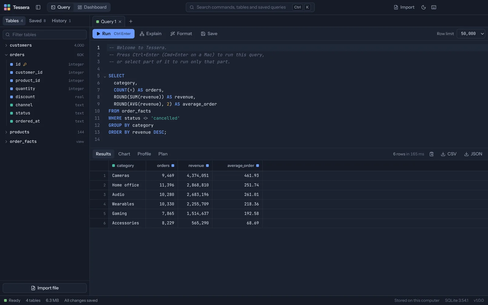
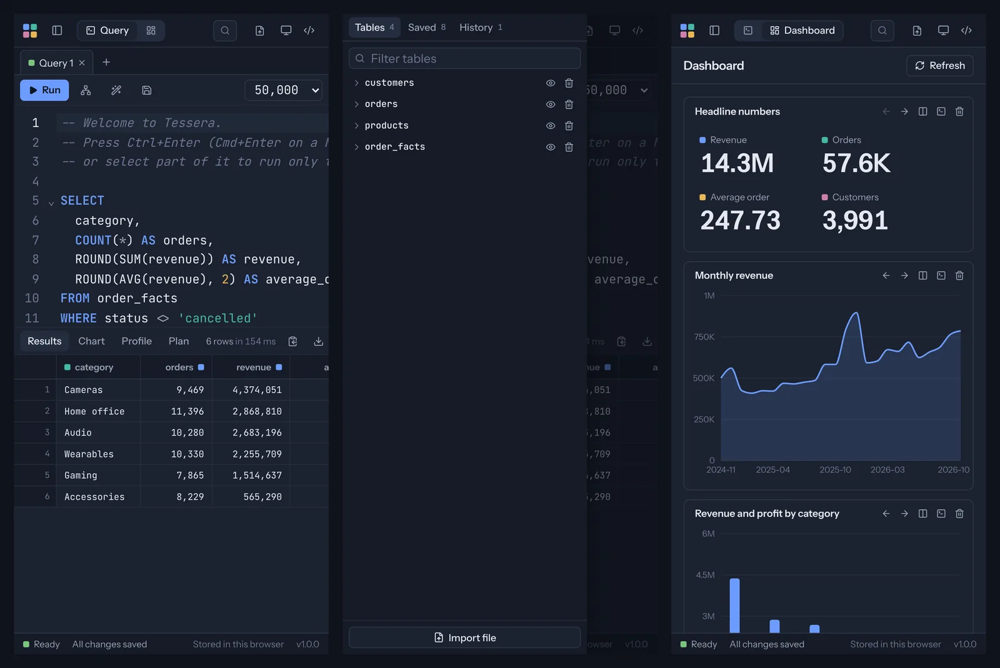

Software, live app
Tessera, a SQL workbench
Tessera turns CSV, JSON and SQLite files into tables you can query with SQL, chart and pin to a dashboard. It runs as a website and as a desktop app, and the data never leaves your machine.
Open the live app and choose Load sample data to try it with 60,000 orders and a ready-made dashboard.
TypeScript, React, SQLite (WebAssembly), Electron, Playwright
Open the live appView the code on GitHubDownload the desktop app

- automated tests: 82 unit, 20 end to end
- 102
- operating systems tested on every change
- 3
- ways to run it, website and desktop, from one codebase
- 2
- uploads: your data stays on your machine
- 0
What it does
- Brings data in: import CSV, TSV, JSON or a SQLite database by file picker or drag and drop, with column types inferred from the data.
- Queries it: a SQL editor with autocomplete that knows your tables, multiple tabs, and SQLite 3 with CTEs and window functions.
- Explains itself: a query-plan view that flags full table scans, and a column profile with completeness, range, median and a histogram.
- Shows the answer: bar, line, area, scatter and pie charts, pinned to a dashboard that re-runs its queries when the data changes.

How it is built
- SQL runs off the main thread. SQLite is compiled to WebAssembly and runs in a Web Worker, so a heavy query never freezes the interface.
- One codebase, two hosts. A thin platform layer hides whether the app is inside Electron or a browser, which is how the same code ships as a website.
- The page is treated as untrusted. The desktop shell is sandboxed, every message between processes is validated, and a strict content security policy blocks remote and inline scripts.
- It works on a phone. Below tablet width the sidebar becomes a drawer and the toolbars collapse to icons.

How it is tested
- 82 unit and component tests cover the query engine against a real SQLite build, file parsing, type inference, sorting and charts.
- 9 desktop tests launch the real app and check the full path: load data, run SQL, handle an error, pin a chart, and survive a restart.
- 11 browser tests run the website at desktop and phone sizes behind its production security headers, and fail on any policy violation.
- All of it runs on Windows, macOS and Linux on every change.